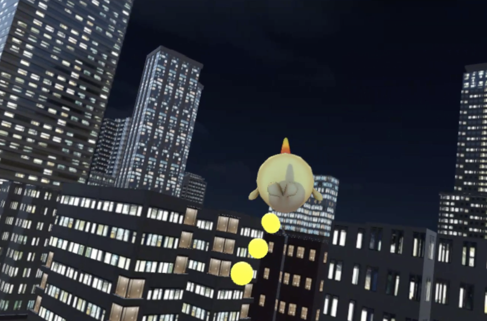

Citylighter
City Lighter was created during a 36-hour hackathon held in Shanghai Jiaotong University in June 2018.
In the game, the player becomes a little whale travelling through the city.
Initially the sky is dark and lights are scattered around the buildings and in the street. The whale can collect the light dots by passing by them and can then go up and reconfigure the light dots up in the sky, so that the light pollution caused by metropollis can be turned to beautiful natural sky again.
This game is intended to raise the awareness of light pollution in the metropolis, while allowing players to create their own city sky map.
The game was made possible by the generous support of HTC VIVE.
Toolkits: Unity
Collaborated with Romola Chang.